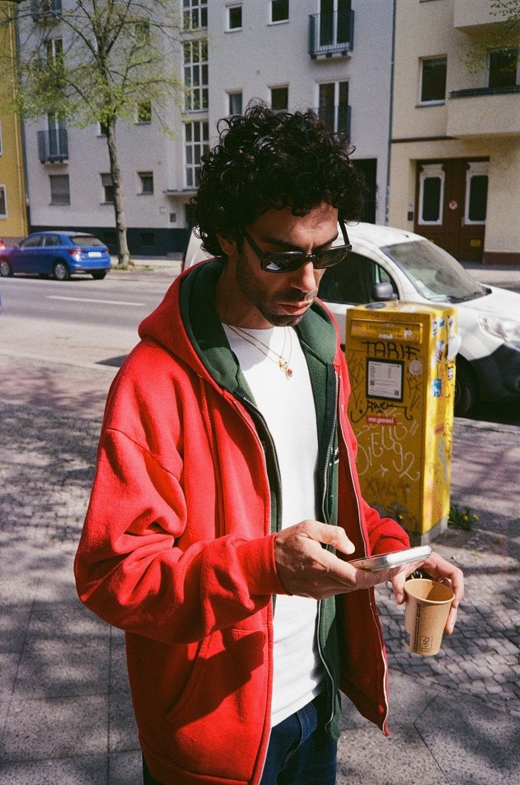

Adrien PonsStyliste · personal shopper · vintage dealerParis
Styling, sourcing. Paris.

- AP-01 · ÉtudesPsychologie
Psychologie, Université Paris Descartes. Bachelor en marketing du luxe.
- AP-02 · Près de dix ansLe vêtement, côté boutique
Retail mode à Paris : vente, ouverture de boutiques, management.
- AP-03 · Depuis 2020Vintage et seconde main
ADN.bazaar, puis la boutique ICONIC Vintage.
- AP-04 · Depuis 2024Styling
Publicité, film et shooting : Back Market, Lidl, Visa x Deliveroo, Dunkin'. Personal styling.
- AP-05 · Aujourd'huiSourcing
Seconde main, boutique, location.
Paris · français, anglais · stylisme photo et vidéo, sourcing vintage, menswear, conseil en image